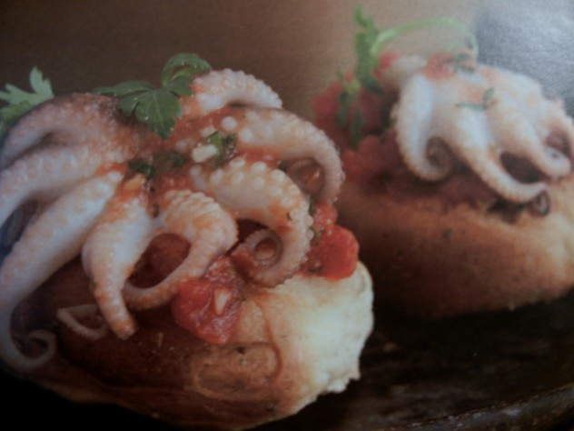

Polpetti in Salsa di Pomodoro
Ingredients
- 2 lb baby octopus
- 2 cups peeled, seeded, and chopped fresh tomatoes or chopped canned Italian peeled tomatoes
- 1/4 cup olive oil
- 1/4 cup chopped fresh flat leaf parsley
- 2 large garlic cloves, finely chopped
- Pinch of crushed red pepper
- Salt to taste
- 6 to 12 slices toasted Italian bread
Directions
- Rinse the octopus and drain well.
- Remove the hard round beak at the base of the tentacles of each octopus.
- In a large heavy saucepan, combine the octopus,tomatoes,oil, 3 Tbsps of the parsley, garlic,red pepper, and salt to taste.
- Bring sauce to simmer.
- Cover the pot and cook over very low heat, stirring occasionally, for 45 minutes.
- Uncover the pan and cook for 15 minutes more, or until the octopus is tender when pierced with a knife and the sauce is thick.
- Sprinkle the toast bread with water to soften slightly.
- Divide the toast bread, among six plates.
- Top with the octopus and sauce.
- Sprinkle with the renaming parsley and serve.